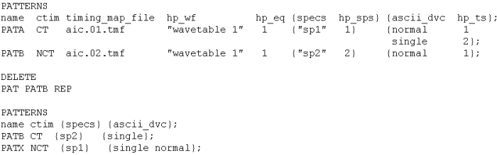
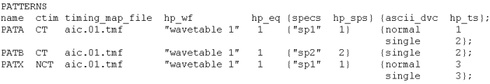

Making Use of the Output Version
The output version of the global configuration file is provided for modifying an existing timing when you call the ASCII interface from a user procedure. You can expand an existing timing, and also delete and modify patterns with the DELETE section. The following example is based on the output version displayed in The Output Columns. The changes include modifying the parameters of the existing pattern PATB and adding a new pattern PATX.
To accomplish this, the following steps must be performed:
- If the input version and the output version of the global configuration file have not the same name, back up your original input version.
- Rename the output version to the input version.
- Remove the explanatory timing description at the end (see The Output Columns) from the renamed file.
- In order to modify PATB and to add PATX, append
a DELETE section with the operator REP for
PATB, and then a new PATTERNS section in input
format containing the new PATX and the modified
PATB patterns. The result could look as follows:

- Run ait with the modified output version as its input version.
The PATTERNS section of the new output version will then look like this:

Of course, the timing setup and the auxiliary output files are modified accordingly.